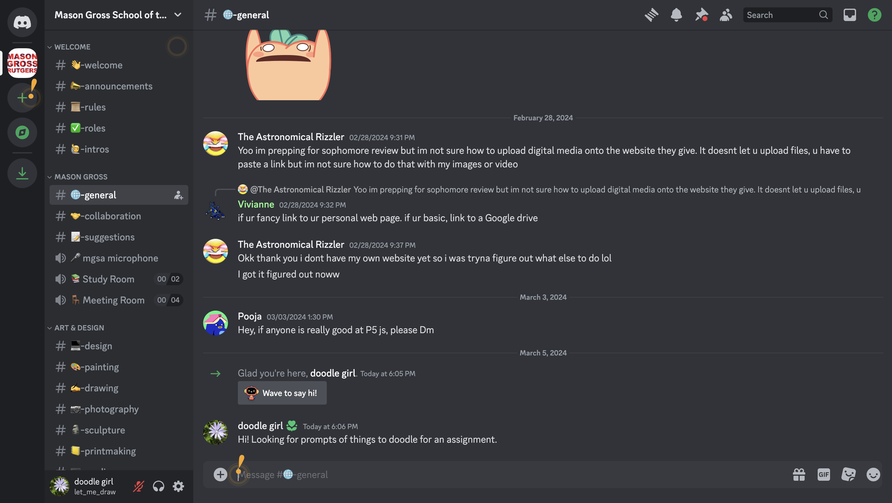
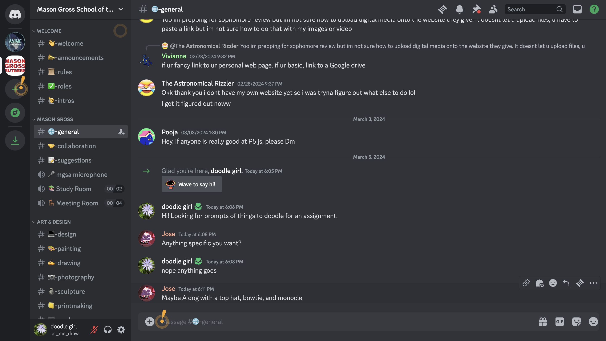
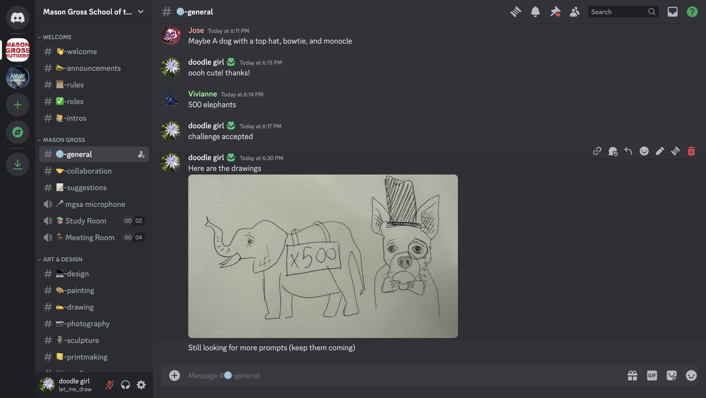
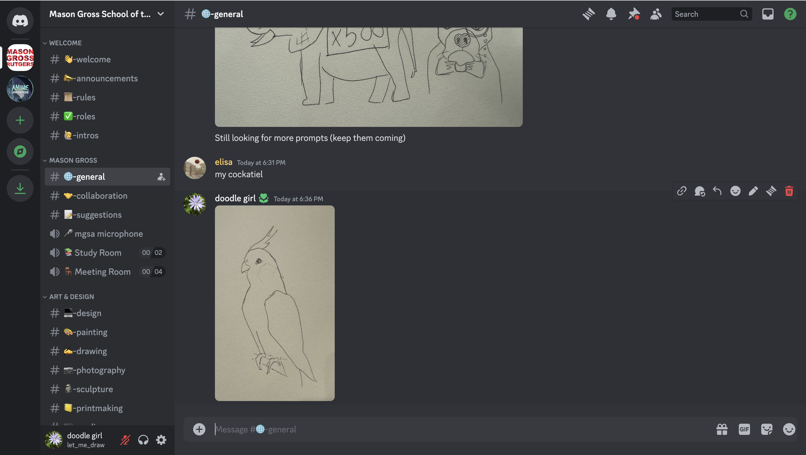
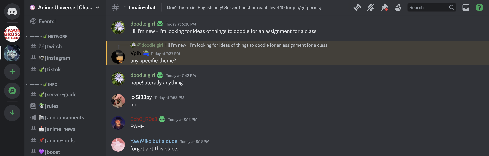

Discord interested me because it was really accesible and has communities where it was a possiblity for me to reach a large group of people easily. I could also keep myself anonymous, which is how I would feel most comfortable. I also felt like in a discord community, people would be more open and therefore more willing to accept and respond to my prompt.
My intervention was going onto different discords and posting for people to give me prompts of things to draw. I would then draw them and send them into the chat. I wanted to see how many people would respond and be interested, and I would enjoy making quick drawings of different things. It happened in one day, on Tuesday, March 5th, because I knew that after initially posting, the only responses I would get would be immediate.
My intervention resulted in several people responding to my request with prompts, and me drawing them then posting them in the Mason Gross Discord. However, after my initial message, not a lot of people responded. However, for the prompts I did get, I did enjoy drawing them.
   In the public anime chat I joined, one person asked if there was a specific theme I wanted, and I responded no, but then I got no requests anyway. Overall I expected at least some responses from both chats, but only got some for one.
To expand on this project, I would create a more permanent way for people to offer prompts, and find a way for it to keep running, maybe by creating and maintaining a new discord group.